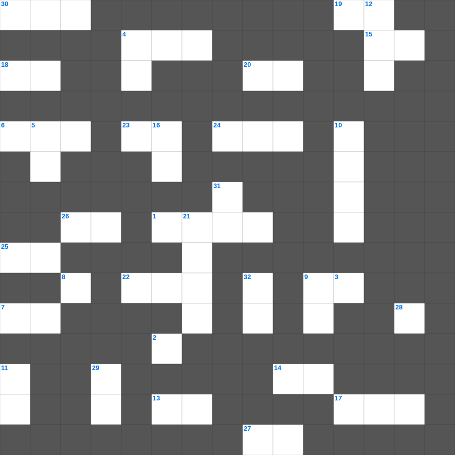

오바댜 & 요나 마스터 50
📌 서비스 정의
십자가로세로는 교회 주보와 주일학교에서 사용할 수 있는 성경 기반 가로세로 퍼즐 서비스입니다. 성경 인물, 사건, 핵심 구절을 바탕으로 제작되었습니다. 온라인 풀이 및 인쇄 기능을 제공합니다.
📖 오바댜란?
오바댜는 이스라엘의 형제 나라이면서도 멸망 때 등을 돌린 에돔에 대한 심판을 선언하며, 여호와의 날과 회복을 예언하는 가장 짧은 구약 예언서입니다.
📚 오바댜의 주요 사건·주제
에돔의 죄에 대한 심판 선언 · 에돔의 교만에 대한 경고 · 여호와의 날 예언 · 민족들에 대한 심판 · 이스라엘 회복 약속
오바댜의 말씀을 퀴즈로 배우는 오바댜 성경 퀴즈 문제입니다. 가로 힌트와 세로 힌트를 보고 35개의 단어를 맞춰보세요. 인쇄도 가능하고 정답 확인도 바로 되니 소그룹 모임이나 가정 예배 시간에도 활용하실 수 있습니다.

📝 가로 힌트
1. 강가에서 모세를 건져낸 사람
2. 철 침대를 가졌던 거인족 바산 왕
4. 제사장 여호야다가 살아있는 동안 성전을 수리하고 선을 행한 왕
5. 바울이 자신을 소개할 때: 하나님의 종이요 예수 그리스도의 이것인 나 바울
6. 우리가 진리를 아는 지식을 받은 후 짐짓 죄를 범한즉 다시 속죄하는 이것이 없고
7. 네가 불 가운데로 지날 때에 타지도 아니할 것이요 이것이 너를 사르지도 못하리니
8. 털 깎는 자 앞에서 잠잠한 이것 같이 그의 입을 열지 아니하였도다
9. 요시야가 제거한 것 '가증한 것들과 산당과 이것'
13. 여호와께서 이와 같이 말씀하시니라 바벨론에서 이것 년이 차면 내가 너희를 돌보고
14. 하나님은 이것게 내는 자를 사랑하시느니라
15. 함께 문안한 인물 중 '세상을 사랑하여 떠난 자'로 나중에 기록된 사람
17. 너희 중에 누구든지 지혜가 부족하거든 모든 사람에게 후히 주시고 꾸짖지 아니하시는 하나님께 이것하라
18. 이것들을 증언하신 이가 이르시되 내가 진실로 속히 오리라 하시거늘
19. 함께 문안한 인물 중 '의사'이며 복음서 기록자
20. 엘리사가 수넴 여인의 죽은 이것을 살려줌
22. 바울이 로마서를 쓸 당시 가고 싶어 했던 최종 목적지 (당시 땅끝)
23. 죽은 자들이 살아나지 못한다면 내일 죽을 터이니 먹고 이것하자 하리라
24. 나의 사랑하는 자야 너는 어여쁘고 화창하다 우리의 침상은 이것하고
25. 둘째는 이것이니 네 이것을 네 자신과 같이 사랑하라 하신 것이라
26. 아무에게서든지 음식을 이것이 먹지 않고 오직 수고하고 애써 밤낮으로 일함은
📝 세로 힌트
3. 하나님께 나아가는 자는 반드시 그가 계신 것과 또한 그가 자기를 찾는 자들에게 이것 주시는 이심을 믿어야 할지니라
4. 여호와는 나의 반석이시요 나의 이것이시요 나를 건지시는 이시요
5. 무엇보다도 뜨겁게 서로 이것할지니 이것은 허다한 죄를 덮느니라
9. 가나안 땅에 들어가면 그 땅의 이것을 다 타파하라
10. 다윗이 통일 왕국의 왕이 된 후 정복한 수도
11. 너는 이 모든 것을 말하고 권면하며 모든 이것으로 책망하여 누구에게서든지 업신여김을 받지 말라
12. 미리암이 죽어 장사된 곳
16. 아리마대 사람 요셉이 빌라도에게 당돌히 들어가 예수의 이것을 달라 하니
21. 이세벨을 피해 도망친 엘리야가 누운 '이것 나무' 아래
29. 흉년 때 요셉의 형들이 곡식을 사러 간 나라
31. 하나님의 거룩한 성품
32. 욕심이 잉태한즉 죄를 낳고 죄가 장성한즉 이것을 낳느니라
🧩 이 퍼즐에서 배우는 내용
이 퍼즐은 오바댜 & 요나 마스터 50의 핵심 단어와 개념을 자연스럽게 복습할 수 있도록 구성되었습니다. 주일학교 수업이나 개인 성경공부에서 학습 내용을 점검하는 용도로 바로 활용할 수 있습니다.
🧑🏫 교회 교육 자료 활용
이 퍼즐은 주일학교 교재 추천 자료로 활용할 수 있고, 주일학교 주보에 넣기 좋은 분량으로 구성되어 있습니다. 수업용 주일학교 교안에 활동지로 붙이거나, 예배 후 복습용 주일학교 공과교재로 바로 사용할 수 있습니다.
🏷️ 키워드
오바댜 성경 퀴즈 문제, 오바댜, 십자가로세로, 성경퀴즈, 말씀퀴즈, 가로세로퍼즐, 주일학교 교재 추천, 주일학교 주보, 주일학교 교안, 주일학교 공과교재